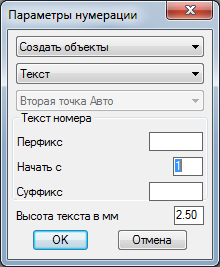

Команда:draw_number_in_text
Команда:draw_number_in_textПозволяет автоматизировать номерацию чего либо.
Если это "что либо" Текст, Мтекст или Мвыноска.
Вызов программы:
Команда:draw_number_in_text


Верхняя строка окна позволяет выбрать один из четырех режимов нумерации:
Создать объекты - номер помещается в создаваемый объект. Программа запрашивает точки вставки новых объектов.
Укажи точку вставки:
 Указывает точку вставки
Указывает точку вставки
Добавить в сущ. объекты - номер добавляется к уже существующему объекту.
Выбери Текст, Мтекст или Мвыноску:
Указывает объект типа Текст, Мтекст или Мвыноску
Заменить содержимое - номер заменяет содержимое существующего объекта.
Выбери Текст, Мтекст или Мвыноску:
Указывает объект типа Текст, Мтекст или Мвыноска.
Нумеровуем вершины полилинии - номера помещаются в объекты создаваемые рядом с каждой вершиной полилинии.
Выбери полилинию:
Указывает объект типа полилиния или 3D полилиния.
Следующая сторока позволяет выбрать объекты какого типа будут создаваться при использовании первого и последнего пункта верхней строки. Сейчас доступны: Текст, Мтекст и Мвыноска. При выборе Редактирования или Замены строка уходит в сумрак.
Третья строка выполняет вспомогательную роль и позволяет выбрать с какой стороны прикреплять к существующему объекту номер в режиме редактирования (спереди иди сзади), а так же ререключение режимов отрисовки Мвыносок при выборе первого пункта верхней строки. Вторая точка Авто - Мвыноска размещается вправо вверх на 20мм в плане и Вторая точка Вручную позволяет пользователю ткнуть туда где он хочет разместить Мвыноску.
В поле Префикс можно ввсести любой текст который будет подставляться перед номером при нумерации.
Поле Начать с отвечает за то с какой цифры начнется нумерация. В этом поле должен быть только номер.
В поле Суффикс можно ввсести любой текст который будет подставляться после номера при нумерации.
В поля Префикс и Суффикс при использовании Мтекста или Мвыноски можно вставить такую конструкцию \P (на латиннице) которая обеспечивает переход на новую строку.
Поле Высота текста в мм активно только когда предполагается создание новых объектов. Для ввода высоты текста создаваемых объектов в милиметрах на бумаге.
Небольшое дополнение:При сочетании режимов Создать объекты, Мвыноска, Вторая точка Авто запрос точки вставки выглядит следующим образом
Укажи точку вставки[Настроить режим авто]:
Если выбрать Настроить режим авто или с клавиатуры написать Н (русская раскладка), будет запрошено две точки, смещение которых, друг относттельно друга, будет использовано для последующей вставки мультивыносок в режиме Вторая точка Авто.